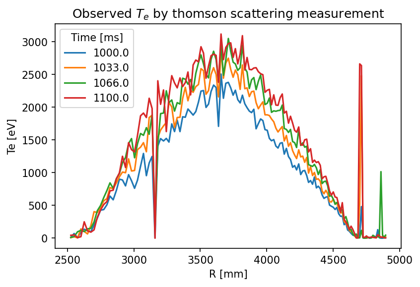
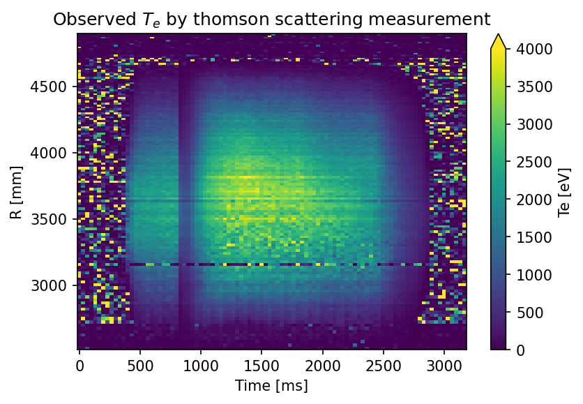

1.1.1. Retrieve thomson scattering data
Thomson scattering data is stored in Kaiseki server and to retrieve them, let’s use the nifs.retrieve.anadata module.
[1]:
from matplotlib import pyplot as plt
from nifs.retrieve.anadata import AnaData
plt.rcParams["figure.dpi"] = 150
Let us load data at shotnumber : 80000 and subshot number : 1 from Kaiseki server.
[2]:
ana = AnaData(80000, 1)
dataset = ana.retrieve("thomson")
If looking into the dataset information, we will see some variables corresponding to Time and R coordinates.
[3]:
dataset
[3]:
<xarray.Dataset>
Dimensions: (Time: 96, R: 137)
Coordinates:
* Time (Time) float64 0.0 33.0 66.0 ... 3.1e+03 3.133e+03 3.166e+03
* R (R) float64 2.525e+03 2.55e+03 ... 4.884e+03 4.895e+03
Data variables:
Te (Time, R) float64 84.0 0.0 38.0 47.0 ... 5.0 73.0 5.0 125.0
dTe (Time, R) float64 2.178e+04 0.0 40.0 ... 2.178e+04 2.178e+04
n_e (Time, R) float64 9.0 138.0 16.0 4.0 ... 38.0 11.0 0.0 16.0
dn_e (Time, R) float64 8.0 63.0 7.0 6.0 7.0 ... 13.0 8.0 11.0 7.0
laser (Time, R) float64 5.209e+03 5.209e+03 ... 4.373e+03 4.373e+03
laser number (Time, R) float64 5.0 5.0 5.0 5.0 5.0 ... 1.0 1.0 1.0 1.0 1.0
Attributes:
diagnostics: thomson
description: density (ne) is only for very rough information\nDo not...
shot_number: 80000
shubshot_number: 1xarray.Dataset
- Time: 96
- R: 137
- Time(Time)float640.0 33.0 ... 3.133e+03 3.166e+03
- units :
- ms
array([ 0., 33., 66., 100., 133., 166., 200., 233., 266., 300., 333., 366., 400., 433., 466., 500., 533., 566., 600., 633., 666., 700., 733., 766., 800., 833., 866., 900., 933., 966., 1000., 1033., 1066., 1100., 1133., 1166., 1200., 1233., 1266., 1300., 1333., 1366., 1400., 1433., 1466., 1500., 1533., 1566., 1600., 1633., 1666., 1700., 1733., 1766., 1800., 1833., 1866., 1900., 1933., 1966., 2000., 2033., 2066., 2100., 2133., 2166., 2200., 2233., 2266., 2300., 2333., 2366., 2400., 2433., 2466., 2500., 2533., 2566., 2600., 2633., 2666., 2700., 2733., 2766., 2800., 2833., 2866., 2900., 2933., 2966., 3000., 3033., 3066., 3100., 3133., 3166.]) - R(R)float642.525e+03 2.55e+03 ... 4.895e+03
- units :
- mm
array([2525., 2550., 2576., 2601., 2626., 2651., 2676., 2700., 2725., 2749., 2773., 2797., 2820., 2844., 2868., 2891., 2914., 2937., 2960., 2982., 3005., 3027., 3050., 3072., 3094., 3115., 3137., 3159., 3180., 3201., 3223., 3244., 3264., 3285., 3306., 3326., 3347., 3367., 3387., 3407., 3427., 3446., 3466., 3486., 3505., 3524., 3543., 3562., 3581., 3600., 3619., 3637., 3656., 3674., 3692., 3711., 3729., 3747., 3764., 3782., 3800., 3817., 3835., 3852., 3869., 3886., 3903., 3920., 3937., 3954., 3971., 3987., 4004., 4020., 4036., 4053., 4069., 4085., 4101., 4117., 4132., 4148., 4164., 4179., 4195., 4210., 4225., 4241., 4256., 4271., 4286., 4301., 4315., 4330., 4345., 4359., 4374., 4388., 4403., 4417., 4431., 4445., 4459., 4473., 4487., 4501., 4515., 4528., 4542., 4556., 4569., 4583., 4596., 4609., 4622., 4635., 4649., 4662., 4674., 4687., 4700., 4713., 4725., 4738., 4751., 4763., 4775., 4788., 4800., 4812., 4824., 4836., 4848., 4860., 4872., 4884., 4895.])
- Te(Time, R)float6484.0 0.0 38.0 ... 73.0 5.0 125.0
- units :
- eV
array([[ 84., 0., 38., ..., 44., 5., 45.], [ 33., 0., 5., ..., 36., 5., 20.], [984., 23., 10., ..., 95., 5., 26.], ..., [ 9., 32., 5., ..., 35., 19., 61.], [ 5., 0., 9., ..., 62., 0., 23.], [ 0., 17., 5., ..., 73., 5., 125.]]) - dTe(Time, R)float642.178e+04 0.0 ... 2.178e+04
- units :
- eV
array([[2.1780e+04, 0.0000e+00, 4.0000e+01, ..., 5.3000e+01, 2.1780e+04, 3.3000e+01], [2.1780e+04, 0.0000e+00, 2.1780e+04, ..., 3.1200e+02, 2.0000e+00, 2.6700e+02], [2.1019e+04, 3.2000e+01, 2.3000e+01, ..., 2.1780e+04, 2.1780e+04, 2.4000e+01], ..., [4.0000e+00, 2.7600e+02, 1.9000e+01, ..., 2.1780e+04, 2.5700e+02, 2.1780e+04], [2.1780e+04, 0.0000e+00, 9.0000e+00, ..., 2.1780e+04, 0.0000e+00, 1.8000e+01], [0.0000e+00, 2.1780e+04, 2.1780e+04, ..., 2.1780e+04, 2.1780e+04, 2.1780e+04]]) - n_e(Time, R)float649.0 138.0 16.0 ... 11.0 0.0 16.0
- units :
- arb
array([[ 9., 138., 16., ..., 15., 13., 28.], [ 4., 43., 13., ..., 8., 23., 8.], [ 9., 12., 19., ..., 4., 11., 17.], ..., [ 25., 9., 15., ..., 8., 7., 1.], [ 0., 132., 16., ..., 4., 20., 26.], [ 24., 9., 5., ..., 11., 0., 16.]]) - dn_e(Time, R)float648.0 63.0 7.0 6.0 ... 8.0 11.0 7.0
- units :
- arb
array([[ 8., 63., 7., ..., 8., 11., 7.], [ 8., 48., 10., ..., 6., 12., 7.], [10., 7., 9., ..., 5., 16., 10.], ..., [ 9., 7., 11., ..., 8., 7., 6.], [ 4., 43., 10., ..., 6., 45., 10.], [42., 8., 12., ..., 8., 11., 7.]]) - laser(Time, R)float645.209e+03 5.209e+03 ... 4.373e+03
- units :
- arb
array([[5209., 5209., 5209., ..., 5209., 5209., 5209.], [5324., 5324., 5324., ..., 5324., 5324., 5324.], [4251., 4251., 4251., ..., 4251., 4251., 4251.], ..., [5233., 5233., 5233., ..., 5233., 5233., 5233.], [5318., 5318., 5318., ..., 5318., 5318., 5318.], [4373., 4373., 4373., ..., 4373., 4373., 4373.]]) - laser number(Time, R)float645.0 5.0 5.0 5.0 ... 1.0 1.0 1.0 1.0
- units :
- arb
array([[5., 5., 5., ..., 5., 5., 5.], [3., 3., 3., ..., 3., 3., 3.], [1., 1., 1., ..., 1., 1., 1.], ..., [5., 5., 5., ..., 5., 5., 5.], [3., 3., 3., ..., 3., 3., 3.], [1., 1., 1., ..., 1., 1., 1.]])
- diagnostics :
- thomson
- description :
- density (ne) is only for very rough information Do not use data for ne_bar < 5*1-^12cm-3 High Voltage is set at 0.50 times Before Calibration! Te limit = 22keV Laser#1, #3, #5, time(ms) Radius(mm) Te(eV) dTe(eV) n_e(arb) dn_e(arb) laser power(arb) laser number
- shot_number :
- 80000
- shubshot_number :
- 1
Let’s plot the electron temperature as a function of R varied between 1000 to 1100 [ms].
[4]:
fig1, ax1 = plt.subplots()
dataset.Te.sel(Time=slice(1000, 1100)).plot.line(x="R", ax=ax1)
ax1.set_title("Observed $T_e$ by thomson scattering measurement");

Also let`s show the 2D image of electron temperature as a function of R and Time.
[5]:
fig2, ax2 = plt.subplots()
dataset.Te.plot(x="Time", y="R", ax=ax2, vmax=4.0e+3)
ax2.set_title("Observed $T_e$ by thomson scattering measurement");
